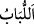

Horozlar seher vakti “Kalkın ey gafiller!” diye seslenir
Sabah/seher vakti uyanık olan saadete erdi
Rasûlüm! Hakkı açıklamak, ilim ve amelin ne kadar şerefli olduklarına dikat çekmek
için: “De ki: Hiç” hallerin hakikatlerini “bilenlerle” yukarıda geçen kânit/ibâdet ehli
kimse gibi ilimlerinin gereğince de amel edenlerle, zikredilenleri “bilmeyenler” tıpkı o
kâfir gibi cehâlet ve dalâletleri muktezâsınca hareket edenler “bir olur mu?”
Buradaki soru, öncekilerin hayır derecelerinin en yükseğinde olduklarına, sonrakilerin
ise şer derekelerinin en aşağısında bulunduklarına dikkat çekmek içindir.
Bahru’l-ulûm’da şöyle der: “Burada fiil lâzım/geçişsiz bir fiil mertebesine
indirilerek onun için bir mef’ul/nesne takdir edilmedi. Çünkü takdir edilen şey
zikredilmiş gibidir. Mânâ şöyledir: Kendisinde ilmin hakikati bulunan kimse ile
bulunmayan bir olur mu?
“Doğrusu ancak akıl sâhipleri bunları hakkıyla düşünür.” Bu, müstakil bir söz olup
Hz. Peygamber’e söylemesi emredilen ifâdeye dahil değildir; Allah Teâlâ tarafından
söylenmiş olup mânâsı şöyledir: Bu açık beyânlardan, ancak vehim ve bozulmuşluk
şâibelerinden uzak durumdaki akıl sâhipleri ibret alır. Bunlar ise böyle bir özellikten ne
kadar uzaktırlar!
Denir ki: Lübbün/hâlis aklın işi, âyet ve delillerden ibret almaktır. İbret almayan
lübbü/hâlis aklı olmayan kimse gibi olur. Onun durumu tıpkı hayvanlara benzer.
el-Müfredât’ta şöyle der: “__WORD__ şâibelerden uzak hâlis akıl demektir. Bir şeyin özüne
“__WORD__ dendiği gibi insandaki en hâlis, katışıksız kuvve olduğu için akla bu isim
verilmiştir. Lübbün saf akıl olduğu da söylenmiştir. Her lübb akıldır, ama her akıl lübb
değildir. Bu yüzden Allah Teâlâ “Kime de hikmet verilirse, ona pek çok hayır
verilmiş demektir. Ancak lübb sâhipleri düşünüp ibret alırlar.” (el-Bakara, 2/269)
ve buna benzer başka âyetlerde ancak saf akılların idrak edebileceği hükümleri lübb
sâhiplerine bağlamıştır.”
et-Te’vîlâtü’n-Necmiyye’de der ki: “De ki: Hiç” Allah’a yakınlığın kadrini
“bilenlerle” bunu cennet ve nimetlerine tercih edenlerle bunun kadrini “bilmeyenler bir
olur mu? Doğrusu” bu mânânın hakikatini “ancak akıl/lübb sâhipleri bunları hakkıyla
düşünür.” Onlar kendi varlık derilerinden tamamen sıyrılan, benlikleri îtibarıyla ölen
ve Hakk’ın hüviyyeti ile yaşayanlardır.”
Âyet ilmin üstünlüğünü ve ilmi ile amel etmeyen âlimlerin değersizliğini
açıklamaktadır. Onlar Allah katında câhillerdir. Çünkü Allah ibâdetle kâim olanları
(kânitîn) âlimler saymıştır.
Şeyh Sühreverdî Avârifü’l-ma’ârif’te der ki: “Himmet sâhipleri, Allah Teâlâ’nın:
“Yoksa geceleyin secde ederek ve kıyamda durarak ibâdet eden, âhiretten çekinen ve
Rabbinin rahmetini dileyen kimse (o inkârcı gibi) midir? (Rasûlüm!) De ki: Hiç
bilenlerle bilmeyenler bir olur mu? Doğrusu ancak akıl sâhipleri bunları hakkıyla
düşünür.” âyetinde ilim sâhibi olduklarına hükmettiği ilim ehlidir. Allah burada